TemperatureSensor IR
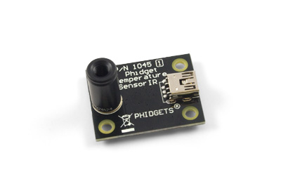
Product Features
Measure the temperature of an object from a distance with this IR temperature sensor. Plugs directly into a USB port.
Product Description
The sensor is an intelligent non-contact temperature sensor with a 10° field of view and a USB interface for easy connection to your computer. It takes an average of the temperature of objects placed within its cone of detection.
The sensor outputs a continuous data flow every 32ms with an active alarm running in the background.; the temperature output data for distant objects ranges from -70°C to 380°C.
This particular revision of the 1045 has the circuitry placed on the reverse side of the board, to reduce measurement errors caused by self-heating.
TemperatureSensor 4-Input
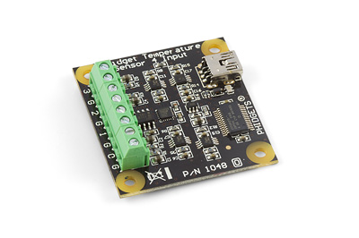
Product Features
Connect up to four thermocouples to this board to measure the temperature of four different objects. Plugs directly into a USB port.
Product Description
Thermocouples are widely used to measure extreme temperatures impossible to measure with other types of sensors.
J, K, E and T thermocouples are directly supported in the library and return the measured temperature in °C.
It is possible to interface other thermocouple types by converting the measured potential returned by the Temperature Sensor into Celsius using the appropriate tables; the formula and links to the tables are described in the User Guide.
Very long thermocouples are okay (even 100m), but if there is measurement stability issues or USB resets, ferrite beads can be added to the thermocouple wire close to the Temperature Sensor. See our tutorial on Addressing EMI Issues.
TemperatureSensor 1-Input
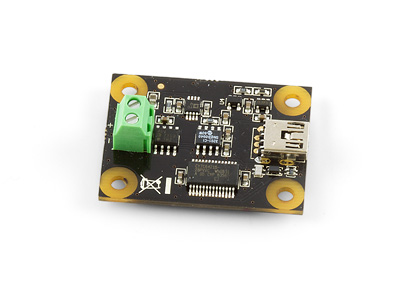
Product Features
Connect a thermocouple to this board to measure the temperature of an object or area. Plugs directly into a USB port.
Product Description
Thermocouples are widely used to measure extreme temperatures impossible to measure with other types of sensors.
J, K, E and T thermocouples are directly supported in the library and return the measured temperature in °C.
It is possible to interface other thermocouple types by converting the measured potential returned by the Temperature Sensor into Celsius using the appropriate tables; the formula and links to the tables are described in the User Guide.
Very long thermocouples are okay (even 100m), but if there is measurement stability issues or USB resets, ferrite beads can be added to the thermocouple wire close to the Phidget Temperature Sensor. See our tutorial on Addressing EMI Issues.
Precision Temperature Sensor
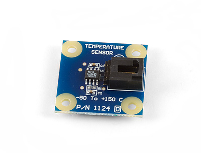
Product Features
This inexpensive temperature sensor measures the ambient temperature in the area surrounding the board and connects to an analog input.
Product Description
Temperature sensor with a range of -30°C to +80°C with a typical error of ±0.75°C in the 0°C to 80°C range.
The temperature sensor component is rated at -50°C to +150°C, but the other components on the board, the connector and the cable are rated at -30°C to +80°C. In a fast prototyping environment the temperature sensor board can be pushed to the ratings of the sensor component, but you should use the lower temperature ratings if you plan to use the sensor in a commercial application.
If you need to measure temperatures outside the -30 to +80C range, you should use a temperature sensors with the appropriate temperature probe.
K-Type Thermocouple Adapter
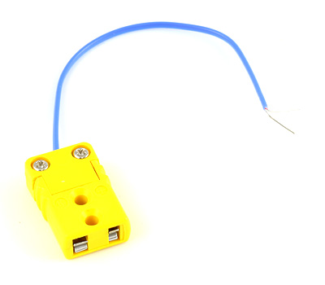
Product Features
Attach an Omega K-Type thermocouple to this adapter for a convenient way to connect it to a terminal block.
Product Description
The thermocouple adapter lets you connect an Omega K-type Thermocouple with Miniature Male Connector to the:
- TemperatureSensor 1-Input
- TemperatureSensor 4-Input
Bead Probe K-Type Thermocouple (-50°C to +200°C)
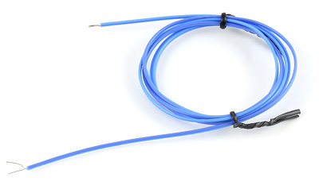
Product Features
This K-Type thermocouple measures temperatures from -50°C to 200°C and connects to a Phidgets thermocouple board.
Product Description
K-Type thermocouple can measure temperatures between -50°C to +200°C with a ±0.75°C accuracy.
Immersion Probe K-type Thermocouple (-50 to +700°C)
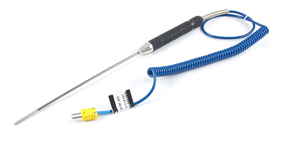
Product Features
This K-Type thermocouple measures temperatures from -50°C to 800°C and connects to a Phidgets thermocouple board.
Product Description
K-Type thermocouple can take continuous temperature readings between -50°C to +800°C with a ±0.75°C accuracy. The sensor can also take a instant, single temperature reading between -100°C to +900°C.
It is mostly used to take the temperature of liquids and gels.
Bead Probe K-type Thermocouple (-50°C to +450°C)
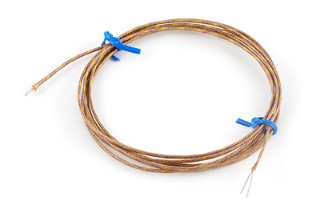
Product Features
This K-Type thermocouple measures temperatures from -50°C to 450°C and connects to a Phidgets thermocouple board.
Product Description
The 3109 thermocouple can measure temperatures between -50°C to +450°C with a ±0.75°C accuracy.
The thermocouple wire is insulated with fiberglass
Bead Probe K-Type Thermocouple (-50°C to +785°C
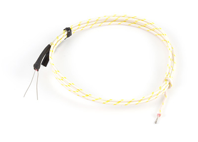
Product Features
This K-Type thermocouple measures temperatures from -50°C to 785°C and connects to a Phidgets thermocouple board.
Product Description
The K-Type thermocouple can measure temperatures between -50°C to +785°C with a ±0.75°C accuracy.
The thermocouple wire is insulated with fiberglass.
K-Type Thermocouple Connector
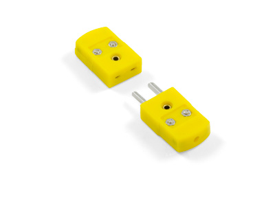
Product Features
Connect two segments of K-Type thermocouple wire together with this solderless connector.
Product Description
This connector can be attached to any K-type thermocouple by securing the exposed wires into the screw terminals, allowing for simple, solderless connectivity with other thermocouple wires.
If you need your thermocouples to reach further, you can use this connector with a segment of K-Type Thermocouple Extension Wire.
K-Type Thermocouple Extension Wire
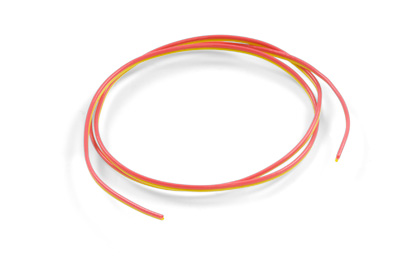
Product Features
Extend the reach of your thermocouple with this specialized thermocouple wire. You can buy it by the meter and have it shipped as one piece.
Product Description
This K-type thermocouple extension wire can be purchased by the meter, allowing for additional customization of your temperature sensing system. If you order multiple meters of wire in a single order, it will ship as one long piece.
You can attach this extension wire to the K-type Thermocouple Connector in order to solderlessly connect the wire to your thermocouple.
Precision Resistor - 1K Ohm 0.1% (Bag of 4)
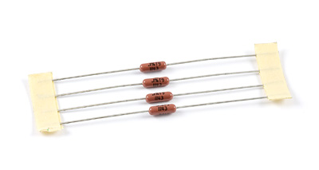
Product Features
Use these precision resistors to interface an RTD with the PhidgetBridge with maximum accuracy.
Product Description
The sensor RTD Resistor Kit includes four pieces of 1.00 KiloOhm resistors. These precision resistors are used to interface Platinum RTDs to the Bridge .
Platinum RTDs (Resistive Thermal Devices) are used to make very precise temperature measurements. RTDs are very accurate, and will measure temperatures up to 500 degrees Celsius. The electrical resistance of the RTD changes predictably with temperature, and RTDs are the most accurate commonly available temperature sensors.
Measuring the resistance of an RTD requires accurate components all through the system - otherwise there is no point in paying for an RTD. The resistors in the 3175 RTD Resistor Kit have a worst case error of 0.1% - translating to a typical temperature error of 0.05 Celsius. The resistors also change their resistance very little with temperature - ambient temperature variation is a significant source of error for thermocouples. RTDs with a well designed data acquisition system will not be subject to these temperature variation errors.
We Provide:
- To be accessible, friendly, and helpful at all times.
- To answer the phone when you call, 24/7/365.
- Reply to your emails and support tickets within 24 hours.
- To provide timely information about new hardware.
- To provide all design documentations.
Please fulfill following request form to get more information!